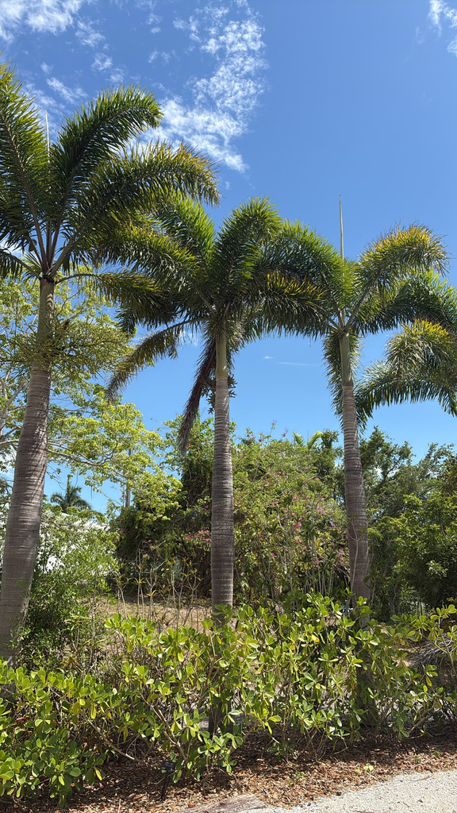

- This palm was completely unknown to science until 1978, when an Aboriginal man named Wodyeti led botanists to a single hidden population on Cape Melville, Queensland — one of the most remote granite wildernesses on earth.
- Its scientific name is a two-part tribute: Wodyetia honors the Aboriginal elder who revealed it, and bifurcata (Latin for 'twice divided') refers to both the forked leaflet tips and the strongly forking black fibers on the outer endocarp — details that become vivid only when the fruit pulp is cleaned away.
- By the mid-1980s, armed criminal gangs were bulldozing roads through Cape Melville National Park to harvest seeds illegally, sparking a political scandal in Queensland. The crisis ended not through enforcement alone but because every cultivated tree produces its own fertile seed — making wild poaching both unnecessary and, ultimately, unprofitable.
- Each frond's leaflets grow in whorled clusters along the rachis and spread outward in multiple planes, creating the dense, bushy 'foxtail' silhouette that set the global landscaping world on fire — no other common palm quite replicates the effect.
The foxtail palm's entire wild range fits inside Cape Melville National Park in Far North Queensland, Australia — a famously inaccessible granite wilderness about 475 km north of Cairns. It grows on exposed boulder fields and coarse sandy soils, wedged between vine thickets and seasonally dry rainforest, where it is the dominant palm species.
The species was brought to the attention of Western botanists in 1978 and formally described in 1983. Nurseries were not granted propagation access until 1992, yet within a single generation the foxtail palm became one of the most widely planted ornamental palms on earth — a landscape arc from obscurity to global ubiquity matched by almost no other plant.
- The foxtail palm is a solitary, self-cleaning palm with a smooth, light-gray trunk ringed by neat leaf-scar bands and topped by a pale green crownshaft. Fronds reach 8–10 feet and arch outward in a full, symmetrical crown of 8–10 leaves.
- The leaflets are arranged in whorled clusters along the rachis and spread outward in multiple planes — the architectural trick that gives the frond its dense, plumose look.
- It is monoecious, carrying both male and female flowers on the same inflorescence, which emerges from just below the crownshaft. Creamy-white flowers appear in late spring to early summer, followed by clusters of brilliant orange-red fruits roughly the size of a cherry tomato, each enclosing a single large, grooved seed.
- UF/IFAS notes that high global demand once drove illegal seed poaching inside Cape Melville National Park, where the entire natural population lives. The pressure has since dropped substantially: because every cultivated individual produces its own fertile seed, wild harvest became unnecessary, and Queensland Parks reports no recent poaching incidents.
The creamy inflorescences attract a range of pollinating insects, including bees. The showy orange-red fruit crop draws birds and small mammals, which disperse the large seeds — a function in cultivation that occasionally produces seedlings beneath parent trees.
The foxtail palm is not a documented larval or nectar host for Florida's butterflies, and its wildlife value is modest compared to native palms. Its primary contribution here is fruiting season food for generalist fruit-eating birds.
Monoecious — each palm bears both male and female flowers on the same branched inflorescence, so a single tree can set fruit without a companion.
Insects, primarily bees, visit the creamy-white flowers as they open from late spring into early summer.
Each orange-red drupe (about 2 inches long) contains one large, elliptical seed. The fleshy pulp must be removed before sowing — it contains germination inhibitors.
Seeds germinate in 2–3 months when kept warm and moist. Growth is fast once established, and plants can reach mature height in 10–15 years under good conditions.
Look below the crownshaft for the pendulous, branched inflorescence — cream-colored when flowering, then heavy with clusters of green fruits ripening to brilliant orange-red.
The most significant hazard for dogs is physical: the large, hard seeds are a genuine choking and GI-obstruction risk, particularly for medium to large dogs inclined to chew fallen fruit — keep pets away from dropped fruit and contact a vet promptly if a seed is swallowed.
The seeds and fruit pulp also contain compounds that can cause gastrointestinal upset in both dogs and people; the fruit is not edible and should not be eaten. The trunk, fronds, and crownshaft are otherwise harmless to touch.
- © Randall Carter (CC-BY-NC), via iNaturalist